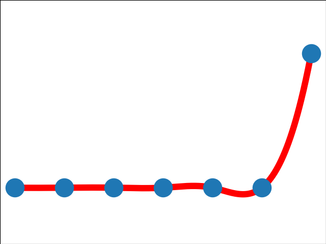
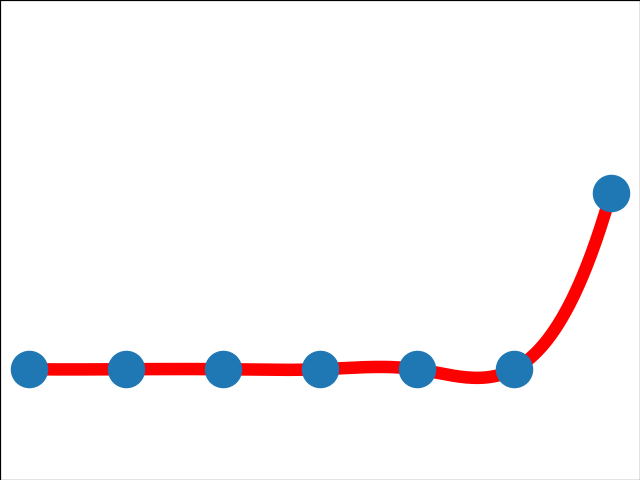

7.14
0.77
4.76
0.51
4.76
0.51

marsbit(04-09 18:11): 掌握这3大提示技巧，让你秒变GPT达人
| Topic | Hot | Trend | Trend for last 7 days | Related Chinese Articles | related English Articles | Related Tweets |
|---|---|---|---|---|---|---|
| DeWi | 7.14 |
0.77 |
 | foresightnews(04-09 13:12): 详解DeWi项目WiFiMap：1.5亿用户的App搭上了Web3的列车 | to be completed | to be completed |
| 互操作 | 4.76 |
0.51 |
 | odaily(04-09 13:46): 数据互操作：Web3的核心体验 | to be completed | to be completed |
| GPT | 4.76 |
0.51 |
|
blockbeats(04-09 15:15): 掌握这3大提示技巧，让你秒变GPT达人！ marsbit(04-09 18:11): 掌握这3大提示技巧，让你秒变GPT达人 |
to be completed | to be completed |